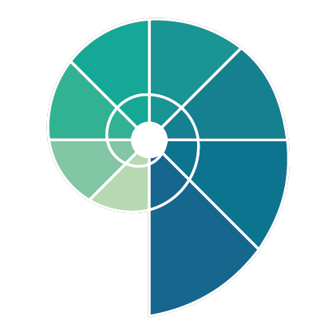

כלי למיפוי יישובי-מועצתי
כלי ליווי לצוותי חינוך, הנהגות יישוביות וועדות חינוך, לבחינה משותפת של חוסנה של מערכת החינוך הבלתי-פורמלי ביישוב - ולבניית תוכנית עבודה מבוססת על הצרכים שעולים ממנה.
המיפוי בנוי משישה תחומים. בכל תחום תמצאו סדרת היגדים, שדורגו בעבר על ידי צוות המכלול לפי חמש רמות התייחסות: קהילה, הנהגה, מערכת, צוות, ילדים ונוער. בסיום תקבלו מיפוי חזותי של המצב הקיים, ותוכלו להמשיך משם אל בנק מטרות אפשריות לבניית תוכנית עבודה.